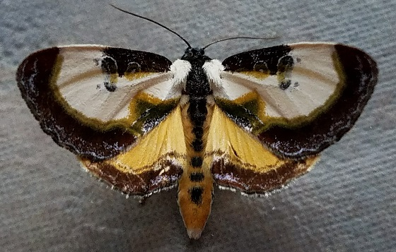

Eudryas grata is a moth known as the beautiful wood nymph. They are known for their mimicry of bird droppings. Found in abundance, predominantly across the entire eastern United States. Hosts for the caterpillar include Ampelopsis, buttonbush, grapes, hops, and Virginia creeper. The Nymph Moth is a magnificent member of the Owlet Moth family, Noctuidae, which is the largest family in the Lepidoptera.
